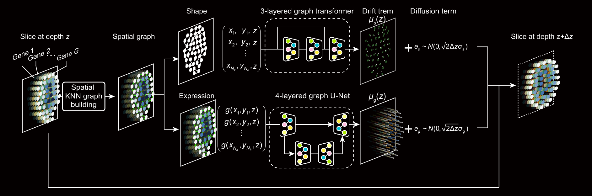

Three-dimensional spatial transcriptomics at isotropic resolution enabled by generative deep learning
isoST is a generative model designed to reconstruct 3D spatial transcriptomic profiles with isotropic resolutions from sparsely sampled serial sections.

Overview
Accurately mapping isotropic-resolution 3D spatial transcriptomes is a major challenge in biology. Current technologies cannot directly achieve full 3D profiling, so tissues are typically sectioned into serial 2D slices for individual profiling.
We present isoST, a framework to reconstruct continuous, isotropic-resolution 3D transcriptomic landscapes from sparsely sampled serial sections. Assuming gene expression varies smoothly in 3D space, isoST models expression dynamics along tissue depth using stochastic differential equations (SDEs), producing a continuous 3D field that enables high-fidelity reconstruction from limited slices.

Fig. 1 | An overview of the isoST.(a) isoST takes as input a series of K parallel two-dimensional (2D) spatial transcriptomics slices. (b) isoST models spatial continuity along the z-axis using stochastic differential equations (SDEs) to reconstruct 3D transcriptomics profiles at isotropic resolution. Starting from an observed slice at depth , the model iteratively propagates each cell’s spatial position and gene expression to the next layer through integration over small steps of size . (c) A schematic of reconstruction steps from depth to . The shape gradient term determines the directional shift in position for each cell, while the expression gradient term estimates the gradient of gene expression used to impute the next layer.

Fig. 2 | The model architecture of isoST. Illustration of the isoST inference process from a profiled slice at depth to the next layer . A spatial graph is constructed using data point coordinates from the input slice. Two graph neural networks are then applied to predict the shape gradient and the expression gradient .
Installation
Create the environment from the provided environment.yml (fixed versions are strongly recommended for reproducibility and to avoid dependency conflicts):
1conda env create -f environment.yml2conda activate isoST- Requires a GPU compatible with
torch==1.12.0and CUDA 11.3. - Includes
faiss-gpu==1.7.3and PyTorch Geometric dependencies (seeenvironment.yml). - Make sure the project root is on your
sys.pathif running from a notebook (already handled inrun.ipynb).
Tutorial
1) Input Data & Directory Structure
The dataset used for reproduction will be released upon publication.
1.1 Slice data (.pt)
One .pt file per slice, shape N × (3 + feature_dim):
- First 3 columns:
(x, y, z)spatial coordinates, wherezis the interpolation axis. - Remaining columns: features (in this project: top 50 PCs of gene expression).
Normalization:
x, y: subtract each axis’s own minimum, divide both by the max width across x and y (ensures isotropic scaling in the xy-plane).
Subtract each axis’s own minimum value.
Divide both axes by the maximum width across x and y (ensuring isotropic scaling in the xy-plane).
This ensures isotropic scaling in the xy-plane.
Python example:
​x1 import torch2​3 # coords: tensor of shape (N, 2) for x, y4 min_x, min_y = coords[:, 0].min(), coords[:, 1].min()5 width_x = coords[:, 0].max() - min_x6 width_y = coords[:, 1].max() - min_y7 max_width = max(width_x, width_y)8 9 coords[:, 0] = (coords[:, 0] - min_x) / max_width10 coords[:, 1] = (coords[:, 1] - min_y) / max_width- PC features: min–max normalization per feature.
1.2 Normalization metadata
Store normalization parameters in the same folder as
.ptslices:min_dic.csv— minimum value for each dimension (xy,PC_1, …,PC_50).scale_dic.csv— scaling factor for each dimension (for de-normalization).
Example: min_dic.csv (stores minimum values for each dimension)
| x | y | z | PC_1 | PC_2 | PC_3 | PC_4 | ... | PC_50 |
|---|---|---|---|---|---|---|---|---|
| ... |
Example: scale_dic.csv (stores scaling factors for each dimension)
| xy | PC_1 | PC_2 | PC_3 | PC_4 | ... | PC_50 |
|---|---|---|---|---|---|---|
| ... |
1.3 Gene list & PCA model
In the project metadata folder, include:
gene.csv— columngene_symbollisting all genes.zscore_pc_model.pkl— PCA model saved with joblib (used to invert PCs back to gene expression).
1.4 Example directory layout
xxxxxxxxxx221data_root = /path/to/isoST2proj = data/zhuang_ABCA_2/zscore_PC50_minmax3​4# Training subset (1_of_5 in the example)5{data_root}/{proj}/1_of_5_normPC_1/6 ├── Zhuang-ABCA-2.004_log_PC.pt7 ├── Zhuang-ABCA-2.005_log_PC.pt8 └── ...9​10# Full dataset for inference11{data_root}/{proj}/1_of_1_normPC_1/12 ├── Zhuang-ABCA-2.004_log_PC.pt13 ├── Zhuang-ABCA-2.005_log_PC.pt14 └── ...15​16# Metadata17{data_root}/zhuang/zhuang_ABCA_2/18 ├── gene.csv19 └── zscore_PC50_minmax/20 ├── zscore_pc_model.pkl21 ├── min_dic.csv22 └── scale_dic.csvNote: file names must match the slide_names definition in the notebook (_log_PC suffix included).
2) Configuration file (config.yml)
Example:
xxxxxxxxxx261trainerIsoST2params3 gene_dim50 # number of PCs (must match preprocessed data)4 hidden_dim64 # dim of latent features5 head_num16 lr0.0017 optimizer_nameNAdam8 weight_decay1e-89​10 methodeuler11 delta_d0.01 # interpolation step along z-axis12 stride1 # loss computation interval along depth13​14 std_x0.01 # sigma_x15 std_y0.01 # sigma_y16 std_z0.1 # sigma_z17 std_seq0.1 # Delta z18​19 alpha0.120 dualtrue # bidirectional trainig and inference21 beta_start_value122 beta_end_value0.0523 beta_start_iteration5024 beta_n_iterations5025 warm_up_rate126​Key points:
gene_dimmust match the PC count in your.ptfiles.delta_dcontrols z-step size; smaller steps yield finer interpolation but increase runtime.stride=1is the only recommended parameter.std_*andalpha/betaparameters are for smoothing and loss scheduling.
3) Notebook Workflow (from run.ipynb)
Steps 1–2: Imports & seed fixing
xxxxxxxxxx261import sys2import os3import os4​5project_root = os.path.abspath(os.path.join(os.getcwd(), '../../'))6sys.path.append(project_root)7​8​9from utils.train_ode import biaxial_train # custom training function10from utils.inference import fine_inference # custom inference function11import torch12import numpy as np13import yaml14import time15​16import random17def seed_all(seed):18 random.seed(seed)19 np.random.seed(seed)20 torch.manual_seed(seed)21 torch.cuda.manual_seed_all(seed)22 torch.backends.cudnn.deterministic = True23 torch.backends.cudnn.benchmark = False24​25​26seed_all(0)Steps 3-4: Define slice names & project paths
xxxxxxxxxx251slide_names_ = ['Zhuang-ABCA-2.004', 'Zhuang-ABCA-2.005', 'Zhuang-ABCA-2.006',2 'Zhuang-ABCA-2.007', 'Zhuang-ABCA-2.008', 'Zhuang-ABCA-2.009',3 'Zhuang-ABCA-2.010', 'Zhuang-ABCA-2.011', 'Zhuang-ABCA-2.012',4 'Zhuang-ABCA-2.013', 'Zhuang-ABCA-2.014', 'Zhuang-ABCA-2.015',5 'Zhuang-ABCA-2.016', 'Zhuang-ABCA-2.017', 'Zhuang-ABCA-2.018',6 'Zhuang-ABCA-2.019', 'Zhuang-ABCA-2.020', 'Zhuang-ABCA-2.021',7 'Zhuang-ABCA-2.022', 'Zhuang-ABCA-2.023', 'Zhuang-ABCA-2.025',8 'Zhuang-ABCA-2.026', 'Zhuang-ABCA-2.027', 'Zhuang-ABCA-2.028',9 'Zhuang-ABCA-2.030', 'Zhuang-ABCA-2.031', 'Zhuang-ABCA-2.032',10 'Zhuang-ABCA-2.033', 'Zhuang-ABCA-2.034', 'Zhuang-ABCA-2.035',11 'Zhuang-ABCA-2.036', 'Zhuang-ABCA-2.037', 'Zhuang-ABCA-2.039',12 'Zhuang-ABCA-2.040', 'Zhuang-ABCA-2.041', 'Zhuang-ABCA-2.042',13 'Zhuang-ABCA-2.044', 'Zhuang-ABCA-2.045', 'Zhuang-ABCA-2.046',14 'Zhuang-ABCA-2.047', 'Zhuang-ABCA-2.048', 'Zhuang-ABCA-2.049',15 'Zhuang-ABCA-2.050', 'Zhuang-ABCA-2.051', 'Zhuang-ABCA-2.052',16 'Zhuang-ABCA-2.053', 'Zhuang-ABCA-2.054', 'Zhuang-ABCA-2.055',17 'Zhuang-ABCA-2.056', 'Zhuang-ABCA-2.057', 'Zhuang-ABCA-2.058',18 'Zhuang-ABCA-2.059', 'Zhuang-ABCA-2.060', 'Zhuang-ABCA-2.061']19​20dim = 5021slide_names = [f'{name}_log_PC' for name in slide_names_]22​23proj = f'data/zhuang/zhuang_ABCA_2/zscore_PC{dim}_minmax'24batch_num = 5 # 1_of_5 subset example25data_dir = os.path.join(project_root, 'data', f'{proj}/1_of_{batch_num}_normPC_1')Key points:
- The slice names are ordered by their z-axis positions (ascending or descending is acceptable, but the order must be consistent)
Step 5: Load config
xxxxxxxxxx31with open(config_file, 'r') as f:2 config = yaml.safe_load(f)3dd = config['params']['delta_d']Step 6: Training parameters
xxxxxxxxxx51device = 'cuda:0'2checkpoint_every = 203backup_every = 54epochs = [100, 100, 100] # three training phases5mode = 'joint'Step 7: Create experiment and result directories
xxxxxxxxxx41experiment_dir = f'experiments' # saving the config file and model parameter2result_dir = f'result' # saving the inference result3if not os.path.exists(result_dir):4 os.makedirs(result_dir)Step 8: Train
xxxxxxxxxx361from utils.train_ode import biaxial_train2​3"""4Main training function for isoST.5This function:61) Loads configuration settings72) Initializes the trainer83) Loads the dataset94) Runs the training loop10​11Args:12 experiment_dir (str): Path to save experiment outputs and checkpoints.13 data_dir (str): Path to preprocessed input data.14 slide_names (list): List of slice identifiers (without file extension).15 batch_num (int): Number of batches (or subset index) used for training.16 config_file (str): Path to YAML configuration file.17 device (str): Device identifier (e.g., 'cuda:0' or 'cpu').18 checkpoint_every (int): Interval (epochs) to save model checkpoints.19 backup_every (int): Interval (epochs) to save backup checkpoints.20 epoch (list): Training epochs for each phase.21 mode (str): Training mode (e.g., 'joint', 'shape', 'expression').22"""23​24biaxial_train(25 experiment_dir=experiment_dir,26 data_dir=data_dir,27 slide_names=slide_names,28 batch_num=1,29 config_file=config_file,30 device=device,31 checkpoint_every=checkpoint_every,32 backup_every=backup_every,33 epoch=epochs,34 mode=mode35)36​Step 9: Inference on full dataset
xxxxxxxxxx301from utils.inference import fine_inference2"""3Perform fine-grained inference using a trained isoST model.4​5This function:61) Loads a pretrained model and configuration from experiment_dir72) Initializes the trainer83) Runs the fine inference process to reconstruct intermediate slices9​10Args:11 experiment_dir (str): Directory containing trained model and config.12 data_dir (str): Path to preprocessed input data (full dataset for inference).13 u_name_list (list): List of slice identifiers for inference.14 mode (str): Inference mode (e.g., 'joint', 'shape', 'expression').15 defined_d (float): Δz step size for interpolation during inference.16 result_dir (str): Directory to save inference outputs.17 batch_num (int): Number of batches (or subset index) used in inference.18 device (str): Device to run inference on ('cuda' or 'cpu').19"""20total_data_dir = os.path.join(project_root, 'data', f'{proj}/1_of_1_normPC_1')21fine_inference(22 experiment_dir,23 total_data_dir,24 slide_names,25 mode,26 dd,27 result_dir,28 batch_num,29 device30)4) Post-processing (3D volume reconstruction)
Step 10: Initialize processor
xxxxxxxxxx121from utils.postprocess import VolumeProcessor2gene_path = os.path.join(project_root, 'data', f'zhuang_ABCA_2/gene.csv')3gene = pd.read_csv(gene_path, index_col=0)4​5processor = VolumeProcessor(6 data_dir=f"{data_root}/zhuang/zhuang_ABCA_2",7 result_dir=result_dir,8 volume_size=(1.0, 0.8, 0.5),9 gene_list=gene['gene_symbol'].tolist(),10 max_lence=22011)12​Step 11: Convert to voxel volume
xxxxxxxxxx71volume, count = processor.result_to_volume(n_features=50, swamp=True)2pc_df = processor.volume_to_df(volume)3​4np.save(f"{result_dir}/volume.npy", volume)5np.save(f"{result_dir}/density.npy", count)6pc_df.to_csv(f"{result_dir}/pc_volume.csv")7​5) PC → Gene expression recovery
Step 12: Inverse transform using PCA model
xxxxxxxxxx111import joblib2​3​4def load_model(model_path):5 pca_model = joblib.load(model_path)6 return pca_model7​8model_path = os.path.join(project_root, 'data', f'{proj}/zscore_pc_model.pkl')9pc_model = load_model(model_path)10​11processor.pc_to_expression(volume, pc_model, 220)Outputs a parquet file:
xxxxxxxxxx41import pyarrow.parquet as pq2table = pq.read_table(f"{result_dir}/log2_expr_220_all_pc.parquet")3predictions = table.to_pandas().astype('float32')4​6) Visualization
The notebook uses Plotly for interactive 3D visualization of points/voxels (scene_dragmode='orbit', aspectmode='data').
You can visualize from:
volume.npy(PC volume)density.npy(point density)- Parquet gene expression output
7) Output Checklist
experiments/: training checkpoints & logsresult/volume.npy: PC volume arrayresult/density.npy: voxel density arrayresult/pc_volume.csv: PCs in table formresult/log2_expr_220_all_pc.parquet: log2 gene expression volume
Consistency checks:
gene_dimin config matches feature_dim in.ptslide_namesmatch.ptfilenames (_log_PCsuffix)min_dic.csv&scale_dic.csvare present with.ptfiles- PCA model matches PC count
- Adjust
delta_dorbatch_numfor memory/runtime balance
Copyright
Software provided as is under MIT License.
Bohan Li @ 2025 BUAA and Deng ai Lab
Permission is hereby granted, free of charge, to any person obtaining a copy of this software and associated documentation files (the "Software"), to deal in the Software without restriction, including without limitation the rights to use, copy, modify, merge, publish, distribute, sublicense, and/or sell copies of the Software, and to permit persons to whom the Software is furnished to do so, subject to the following conditions:
The above copyright notice and this permission notice shall be included in all copies or substantial portions of the Software.
THE SOFTWARE IS PROVIDED "AS IS", WITHOUT WARRANTY OF ANY KIND, EXPRESS OR IMPLIED, INCLUDING BUT NOT LIMITED TO THE WARRANTIES OF MERCHANTABILITY, FITNESS FOR A PARTICULAR PURPOSE AND NONINFRINGEMENT. IN NO EVENT SHALL THE AUTHORS OR COPYRIGHT HOLDERS BE LIABLE FOR ANY CLAIM, DAMAGES OR OTHER LIABILITY, WHETHER IN AN ACTION OF CONTRACT, TORT OR OTHERWISE, ARISING FROM, OUT OF OR IN CONNECTION WITH THE SOFTWARE OR THE USE OR OTHER DEALINGS IN THE SOFTWARE.